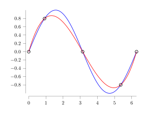

Approximation tools
The design of nested bases allows us to reuse an approximation for one basis as a starting point for another basis.
As a special case, we can always obtain an initial approximation for a constant in any basis:
using SpectralKit, Accessors
b1 = UnivariateBasis(Chebyshev(), Endpoints(), BoundedLinear(0, 1), 1)
θ1 = constant_coefficients(b1, 4.0)3-element Vector{Float64}:
4.0
0.0
0.0Bases are immutable, so to change one thing about a basis it is recommended to use @set from Accessors.jl. Then we adjust coefficients to the new basis:
b2 = @set b1.level = 2
adjust_coefficients(θ1, b1, b2)5-element Vector{Float64}:
4.0
0.0
0.0
0.0
0.0Adjustment either pads with zeroes or truncates. It is useful as a starting point in iterative methods: for example, having solved a functional equation in a basis, one can use it as a starting point in a basis which nests the previous one.
An initial apprimation may also be obtained using a collocation matrix, ie the basis functions evaluated at gridpoints:
using SpectralKit
b_sin = UnivariateBasis(Chebyshev(), Endpoints(), BoundedLinear(0, 2*π), 2)
θ = collocation_matrix(b_sin) \ sin.(grid(b_sin))5-element Vector{Float64}:
3.849919285321531e-17
-0.5626400585724003
-1.2246467991473532e-16
0.5626400585724002
-3.849919285321532e-17(The choice of level = 2 is deliberate, it does not give a very good approximation, but for level = 3 the lines in the plot below would overlap.)
Note the near-zeros, sin is an odd function. The approximation is exact at the gridpoints:
using Miter, Colors
let r = range(extrema(domain(b_sin))...; length = 100), f = linear_combination(b_sin, θ)
Plot(Lines((x, sin(x)) for x in r; color = colorant"blue"),
Lines((x, f(x)) for x in r; color = colorant"red"),
Scatter(MarkSymbol(:o), ((x, sin(x)) for x in grid(b_sin))))
end